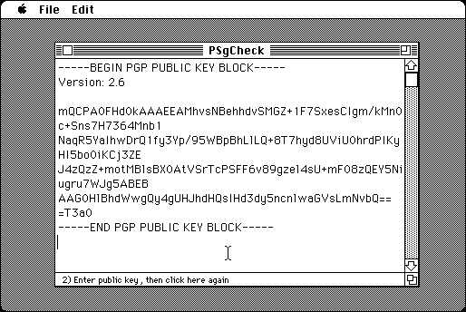

Download
psgcheck-1.1.0.zip (info) a zipped hfs disk image and checksum file. The disk image can be mounted with Mini vMac. Includes source code.
PSgCheck is a tool for checking digital signatures, just like SigCheck, except that it uses a different format that is more or less compatible with the program MacPGP.

The related tool PSgWrite creates digital signatures that can be checked by PSgCheck. Public and secret key pairs for these tools can be created with PMakKeys.
PSgCheck is in part descended from MacPGP source code, which, as far as I can tell, allows derived works for noncommercial use. PSgCheck is generally compatible with MacPGP, but it is easier to legally distribute, since it doesn’t do cryptography. Since it only does one thing it should also be easier to use. PSgCheck only handles a subset of signed messages that MacPGP does.
PSgCheck has been replaced by SigCheck, which uses a different format, “GRY”. The “GRY” format is much simpler, and therefore shorter.
To attempt to mitigate weaknesses of md5, the GRY signature format uses two different md5 checksums, the normal one, and the md5 checksum of the input bytes in reverse order. It also includes 3 byte CRC checksums in normal and reverse order, and 2 bytes of version info to make a 40 byte digest (320 bits). 384 bits is the minimum key size supported by SigCheck, which means the maximum digest size which can be encoded in the signature is 384 bits. It is hopefully harder to construct two files where these 40 byte digests match than it is to make the 16 byte md5 checksums match.
The signature format used by PSgCheck only uses the 16 byte md5 checksum as a digest. Currently md5 is generally considered hopelessly weakened, and unsuitable for any purpose. However, as far as I know, there is still no publicly known practical “Preimage” attack, which is what is most important for signing. That is, if I create a file that has a certain md5 checksum, there is no practical way known yet for someone else to construct a different file with the same checksum. But it is possible to create two files with the same md5 checksum. So you have to be careful about signing a statement that you have looked at a file created by someone else, with a given md5 checksum, and it is good. Because they might have another file with the same checksum that isn’t good. And you have to be careful about signing a statement that contains a significant amount of text from someone else, especially if your text that precedes their text is predictable. Which seems to be what happened to Microsoft with the “Flame” malware.
See the Compiling page for instructions on compiling PSgCheck from the source code.
:
If you find PSgCheck useful, please consider helping the Gryphel Project, of which it is a part.